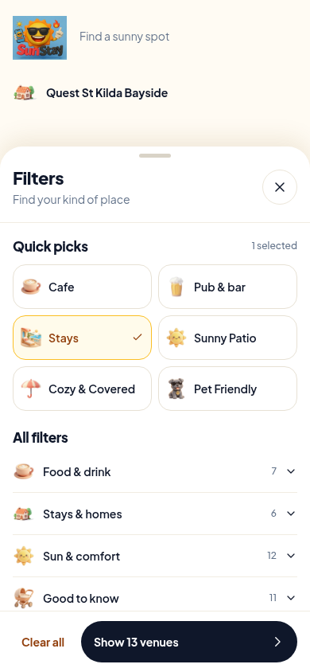
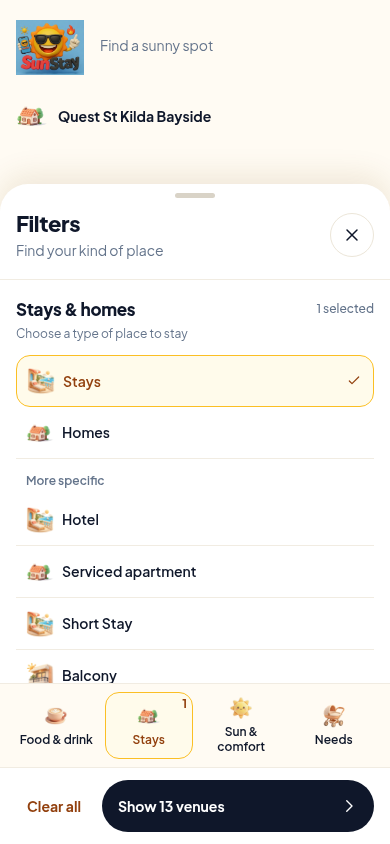
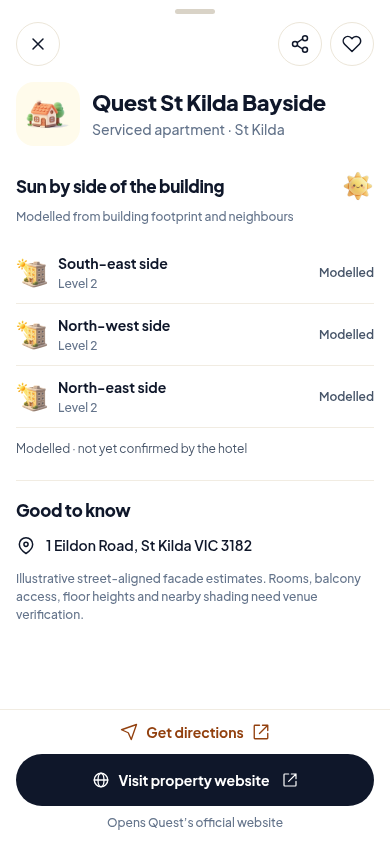

SUNSTAY · DESIGN REVIEW · 4 NOVEMBER 2026
Less scrolling. A better next step for stays.
Static proposals for approval. These files do not change the app. Open a screen for its responsive preview, or use the 320px links to inspect the small iPhone capture.
Recommended


Alternative


Quest St Kilda Bayside


What is real in these previews?
All 36 filter IDs are from the current app. “13 venues” is the actual count of stays in its 56-venue repository fallback, not a live production inventory count. Quest’s name, address, property type, website and modelled side labels come from that same catalogue. No prices, amenities or sun times have been added.
The stay body is condensed to give the footer context. This proposal changes the action hierarchy only; an implementation would preserve the full existing stay content and sun graphs. The previews do not filter the app, fetch weather or store selections.